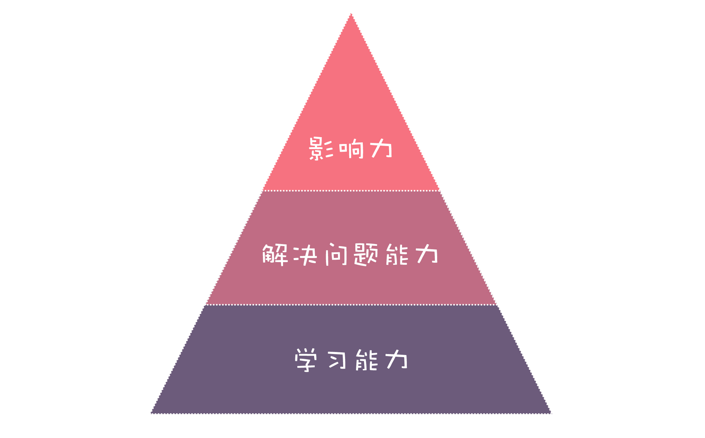

- 00 开篇词 你为什么应该学好软件工程？.md
- 01 到底应该怎样理解软件工程？.md
- 02 工程思维：把每件事都当作一个项目来推进.md
- 03 瀑布模型：像工厂流水线一样把软件开发分层化.md
- 04 瀑布模型之外，还有哪些开发模型？.md
- 05 敏捷开发到底是想解决什么问题？.md
- 06 大厂都在用哪些敏捷方法？（上）.md
- 07 大厂都在用哪些敏捷方法？（下）.md
- 08 怎样平衡软件质量与时间成本范围的关系？.md
- 09 为什么软件工程项目普遍不重视可行性分析？.md
- 10 如果你想技术转管理，先来试试管好一个项目.md
- 11 项目计划：代码未动，计划先行.md
- 12 流程和规范：红绿灯不是约束，而是用来提高效率.md
- 13 白天开会，加班写代码的节奏怎么破？.md
- 14 项目管理工具：一切管理问题，都应思考能否通过工具解决.md
- 15 风险管理：不能盲目乐观，凡事都应该有B计划.md
- 16 怎样才能写好项目文档？.md
- 17 需求分析到底要分析什么？怎么分析？.md
- 18 原型设计：如何用最小的代价完成产品特性？.md
- 19 作为程序员，你应该有产品意识.md
- 20 如何应对让人头疼的需求变更问题？.md
- 21 架构设计：普通程序员也能实现复杂系统？.md
- 22 如何为项目做好技术选型？.md
- 23 架构师：不想当架构师的程序员不是好程序员.md
- 24 技术债务：是继续修修补补凑合着用，还是推翻重来？.md
- 25 有哪些方法可以提高开发效率？.md
- 26 持续交付：如何做到随时发布新版本到生产环境？.md
- 27 软件工程师的核心竞争力是什么？（上）.md
- 28 软件工程师的核心竞争力是什么？（下）.md
- 29 自动化测试：如何把Bug杀死在摇篮里？.md
- 30 用好源代码管理工具，让你的协作更高效.md
- 31 软件测试要为产品质量负责吗？.md
- 32 软件测试：什么样的公司需要专职测试？.md
- 33 测试工具：为什么不应该通过QQ微信邮件报Bug？.md
- 34 账号密码泄露成灾，应该怎样预防？.md
- 35 版本发布：软件上线只是新的开始.md
- 36 DevOps工程师到底要做什么事情？.md
- 37 遇到线上故障，你和高手的差距在哪里？.md
- 38 日志管理：如何借助工具快速发现和定位产品问题 ？.md
- 39 项目总结：做好项目复盘，把经验变成能力.md
- 40 最佳实践：小团队如何应用软件工程？.md
- 41 为什么程序员的业余项目大多都死了？.md
- 42 反面案例：盘点那些失败的软件项目.md
- 43 以VS Code为例，看大型开源项目是如何应用软件工程的？.md
- 44 微软、谷歌、阿里巴巴等大厂是怎样应用软件工程的？.md
- 45 从软件工程的角度看微服务、云计算、人工智能这些新技术.md
- 一问一答第1期 30个软件开发常见问题解决策略.md
- 一问一答第2期 30个软件开发常见问题解决策略.md
- 一问一答第3期 18个软件开发常见问题解决策略.md
- 一问一答第4期 14个软件开发常见问题解决策略.md
- 一问一答第5期 22个软件开发常见问题解决策略.md
- 学习攻略 怎样学好软件工程？.md
- 特别放送 从软件工程的角度解读任正非的新年公开信.md
- 结束语 万事皆项目，软件工程无处不在.md
27 软件工程师的核心竞争力是什么？（上）
你好，我是宝玉。软件工程师，是软件项目重要的人员组成，从设计到编码实现以及上线后的运行维护，都需要软件工程师的参与。所以大家都很关心的一个问题是：软件工程师的核心竞争力是什么？
软件工程师的核心竞争力
其实我在微博上问过“软件工程师的核心竞争力是什么?”这个问题，得到很多答案：技术、代码、天赋和激情、经验、想象力……
我思考过这些答案，觉得很多答案挺好，但是不够突出核心竞争力，或者没有突出软件工程师的特点。
比如说技术和代码的能力，属于基础能力，而不属于核心竞争力；天赋和激情其实放哪个职业都可以这么说，何况天赋也不是决定性因素，聪明人不是好程序员的例子也很多；
经验是很重要，但是不能说明太多问题，有些号称有三年开发经验的程序员不过是把一年的经验重复了三次罢了；想象力是很重要，但我觉得更适合科学家或者艺术家，因为他们要通过想象力在未知的领域去探索，而工程师更多是利用已有的知识去打造产品，想象力算不上核心竞争力。
我觉得软件工程师的核心竞争力，不是单一能力的体现，而是几种能力和价值的合集。学习能力、解决问题能力和影响力构成了软件工程师的核心竞争力。
学习能力
对于软件工程师来说，最基本的要求是技术和代码。如果你看招聘网站上招聘软件工程师的要求，都需要能掌握一门或者多门编程语言，会熟练使用工具、框架。
但熟练掌握一门编程语言、框架，还不能构成核心竞争力。因为现在技术更新迭代很快，现在你熟悉的语言或者框架，可能过几年就没有太大的市场了，需要学习新的技术。
这点做前端的同学一定深有体会，比如说前几年 jQuery 很火，你好不容易精通了，过两年又要改用 Angularjs，而现在则是 React、Vue 的天下了。而且光会这些框架还不够，还要学习使用配套的打包工具，而这些工具也一直在推陈出新，每次更新升级，都需要重新学习。
就算是编程语言，时间周期能稍微长一点，但也没有谁能保证一门语言就可以一直很火。我早些年对 Asp.Net 的掌握程度已经到了技术专家级别，后来公司要转型做移动应用，就必须要去学习 Objective-C，否则就得换个公司才行。
出国留学后要重新找工作，这时候 Asp.Net 和 Objective-C 的工作机会很少，但是前端工作机会多，我就需要去学习前端，才能有更多的工作机会。
所以我觉得，编程语言、框架、工具，这些都不是软件工程师的核心竞争力，能快速学习掌握编程语言、框架、工具的学习能力才是软件工程师最基础的核心竞争力。
解决问题的能力
为什么我说学习能力只能算是基础的核心竞争力呢？因为技术学了是要用才能产生价值的。学的好不代表用的好，所以你看很多 Leetcode 上刷题分很高的同学，让他去实现一个需求，代码可能还是会写的一团糟。
那么软件工程师怎么运用学到的技术呢？我们可以先看看软件工程师的日常工作，有哪些主要工作以及需要什么样的能力去解决：
- 实现功能需求——需要先分析需求，然后抽象设计，最后实现；
- 修复 Bug——改 Bug 最大的挑战其实是重现问题，也就是发现问题，然后再分析问题，最后解决问题；
- 重构代码、优化性能——对代码重构，优化性能，最难的地方其实在于发现代码问题在哪，发现性能的瓶颈，后面再去寻找解决方案，最后再解决。
也就是说，**软件工程师这些日常开发工作的核心还是在发现问题、分析问题和解决问题，在这里我统称为解决问题的能力。**这几个能力看起来没什么稀奇，但是要仔细分析，其实软件工程师的水平高低，恰恰就体现在解决问题的能力上面。
发现问题
若干年前我们要做一个抽奖系统，负责这个任务的程序员设计了技术方案让我审查，他的方案从功能方面是没问题的，但在安全方面却欠考虑。
我就问他如果有人用个工具模拟用户操作反复点，岂不是可以不停参加抽奖，极大提高中奖概率？于是他说那可以在前端增加限制重复点击。我说如果通过抓包工具反复直接发送数据包，不还是一样可以绕过你前端的检查吗？
同样一个抽奖系统需求，新手程序员看到的是如何实现功能，而有经验的程序员，会发现可能存在的安全隐患，未雨绸缪，把可能的安全问题消除掉。这就是发现问题的能力体现。
- 分析问题
软件工程师经常遇到的一个问题就是生产环境发生故障，新手程序员通过分析也能把问题修复，但修复完了就觉得没事了。而有经验的程序员，会在恢复后还会进一步分析故障产生的深层次原因，以及以后可以怎么预防类似的故障再次发生。
分析问题，不仅是分析表面的问题，还需要去分析问题深层次的原因，以及思考预防同类问题的机制。
- 解决问题
在发现问题和分析问题后，解决问题相对会容易一些。但有时候明明知道问题在哪，但不知道怎么解决也是很苦恼的事情。
在工作中，就经常有新手程序员跑来找我请教问题，比如说遇到一个 API 不会用。这时候我通常不会直接告诉他答案，因为我可能也不知道某个 API 的用法，就算我知道，告诉他这一次了，他下一次还是不会自己去解决。
所以我会反问他：
-
“查过官方文档吗？”——基本上大部分 API 在官方文档都有说明的；
-
“有没有去搜索过？”——很多问题已经有人遇到过，而且还把解决方案都贴出来了，比如 StackOverflow 就是个很好的地方；
-
“用的什么关键字？”——很多时候没找到结果就是因为关键字没选好，比如用中文关键字很难搜索出匹配的技术帖子，改成英文使用谷歌就可以找到更多更合适的结果；
还有的问题确实不是通过搜索能解决的，需要去寻求其他组或者外部专业人士的帮助。就算是问问题这种小事，一样都能体现程序员的水平。
比如我就遇到过很多次有程序员去请教别人问题，但是都没人回复的，并不是没有人愿意帮忙，而是他基本的问题都没有描述清楚，从他的问题很难知道表达的意思和要解决的问题。这时候我通常会建议他先去看看《提问的智慧（How To Ask Questions The Smart Way）》这篇文章。
这样的发现问题、分析问题和解决问题的能力，就是软件工程师的进阶核心竞争力。
影响力
解决问题的能力，确实是软件工程师很重要的一种能力体现，但是还不能完全体现出软件工程师的核心竞争力。
为什么大部分程序员的技术水平和解决问题能力差不多，而有的升职加薪的机会更多？有的不需要去找工作，总有工作来找他们？这其中的差别，就在于他们的影响力不同。
有些程序员，做事情认真靠谱，做出来的结果让人放心，这样久而久之，就在公司形成了口碑和影响力，大家愿意与之共事。
有些程序员，乐于帮助其他人，分享自己的经验，跟一些新手程序员是亦师亦友的关系，在团队里有很高的威望。
有些程序员，有独特的项目、公司或者行业经历，比如在阿里巴巴这样的大厂有多年架构师经验，在业界有一定知名度。
有些程序员，写自己的技术博客，出去做技术讲座，成了技术大 v，在技术圈子里面有一定的名气和影响力。
这样的影响力不是一朝一夕能形成的，但却是一个软件工程师最核心的价值体现。
你需要通过一点点技术成长的积累，需要通过一个个成功项目的积累，需要通过一篇篇技术文章分享的积累，需要通过一次次帮助其他人成长的积累。而一旦形成足够的影响力，就会变成软件工程师职场发展最牢固的护城河。
所以综合来说，软件工程师最核心的竞争力其实分三层：
-
最底层、最基础的就是学习能力，通过学习能力，快速学习掌握新技术；
-
中间一层就是解决问题的能力，充分利用学到的技术，去发现问题、分析问题和解决问题；
-
最上一层就是影响力，是核心竞争力的综合体现。
学习能力、解决问题能力和影响力一起构成了软件工程师的核心竞争力，就像下面这个金字塔图一样，我称之为软件工程师竞争力金字塔。

但必须要注意，这三层缺一不可，你不能光去追求影响力而不踏踏实实学习和做事，也不能光去做事而不学习。必须要踏实地、一层层地打好基础，这样才能让你的竞争力是持久的，而不是昙花一现。
软件工程师竞争力金字塔的意义
如果你是软件工程师，了解了软件工程师竞争力金字塔，你就可以自下而上，更有针对性地培养、提高软件工程师的核心竞争力。
不是把自己绑死在一门技术或者一个框架上，而是训练自己的学习能力，让自己可以拥有快速学习掌握新技术的能力。
日常工作不仅仅是实现一个个的功能，做一个个的项目，而是在这个过程中，去锻炼和提升你发现问题、分析问题和解决问题的能力。这样才能使你的工作经验最大化，而不是机械重复没有积累。
在工作中，不仅是把事情做成，还要把事情做好；不仅是自己成长，还要帮助其他人成长；最大化的利用好所在平台和行业的经历，转变成你的经验和影响力。工作之外，也多分享，打造自己的品牌。
这样你就可以一点点搭建出来属于你的竞争力金字塔，构建出自己的核心竞争力。
如果你是要招聘优秀的软件工程师，了解了软件工程师竞争力金字塔，你可以自上而下，更容易筛选出来优秀的软件工程师。
首先你可以通过内部推荐，优先找那些口碑好，做事情认真靠谱的软件工程师。然后你可以考察他解决问题的能力。比如说你可以问他：
-
“项目中遇到过的哪些复杂的问题？”
-
“是怎么样去解决的？”
通过对问题的答复，再深入问一些细节问题，例如：“你当时是怎么考虑安全性问题的？”“如果访问量增加一倍，会有什么影响？”等等。你就可以对他解决问题的能力有个初步了解了。
最后你还可以考察一下学习能力。比如你可以问他：
-
“最喜欢的编程语言是什么？”
-
“你是如何学习这门语言的？”
-
“如果让你学一门新的语言，你打算怎么学？”
这样你也可以对他的学习能力有一个大致了解。
总结
由于篇幅限制，我将文章分成了上下两篇。上篇主要分析了软件工程师的核心竞争力，也就是学习能力、解决问题能力和影响力。我会在下篇中，为你讲具体怎么做，才能有效提升软件工程师的核心竞争力。
学习能力，就是你学习并掌握一门技术、框架和工具的能力。好的学习能力，能帮助软件工程师在技术日新月异的今天，快速跟上技术发展的步伐。
解决问题的能力，就是发现问题、分析问题和解决问题的能力。解决问题的能力，是软件工程师非常重要的能力，帮助软件工程师在日常工作中高效完成工作，创造价值。影响力则是软件工程师价值的综合体现。
如果你是软件工程师，那么就需要自下而上，训练自己的学习能力，积累解决问题的经验，工作的过程中形成影响力，一点点去构建自己的核心竞争力。如果你要招聘或筛选优秀的软件工程师，则需要自上而下，选择那些口碑好有影响力的，能帮你解决问题的，有很好学习能力的人。